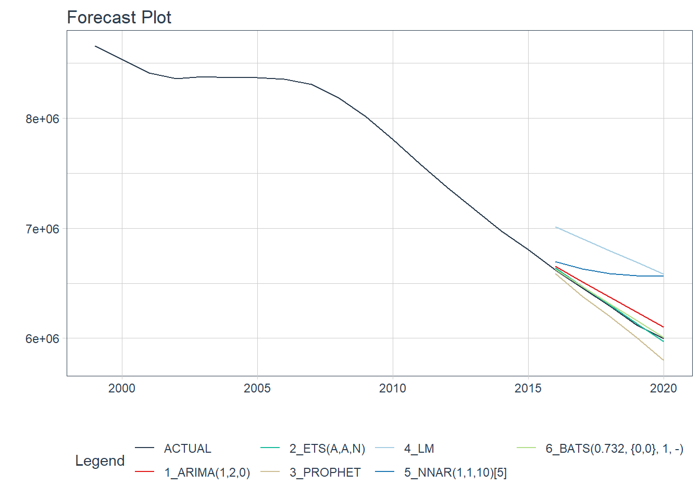
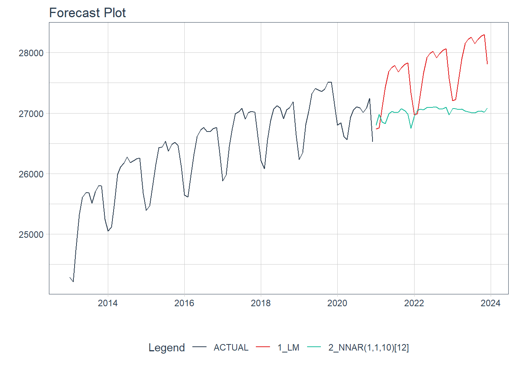
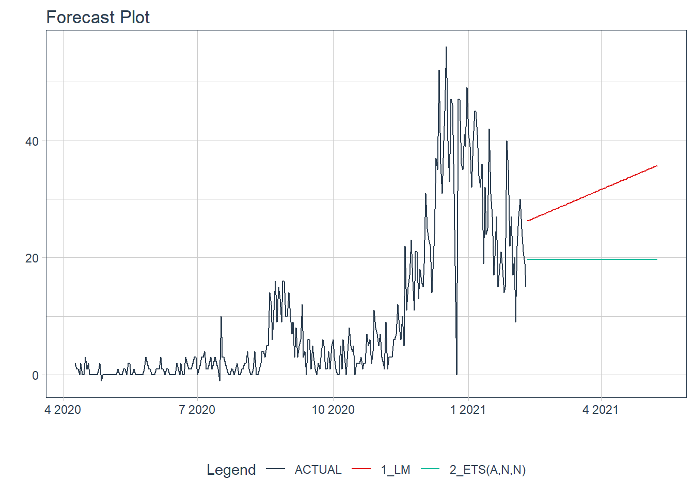

7.3 modeltime
Just follow the modeltime workflow, which is detailed in 6 convenient steps:
Collect data and split into training and test sets
Create & Fit Multiple Models
Add fitted models to a Model Table
Calibrate the models to a testing set.
Perform Testing Set Forecast & Accuracy Evaluation
Refit the models to Full Dataset & Forecast Forward
7.3.1 linear_reg 함수(tidymodels, parsnip, modeltime 패키지)
본 절에서 parship 패키지와 modeltime 패키지를 사용하여 선형 회귀 모델을 생성하는 방법을 소개한다. parsnip 패키지는 머신러닝 패키지인 ‘caret’ 패키지를 개발한 Max Kuhn이 개발한 패키지이다. 이 패키지는 R, Spark, Stan 등의 엔진에서 사용하는 함수들이 함수마다 다른 인수를 사용하기 때문에 사용자들이 사용하기 힘들다는 점에 착안하여 인수 이름을 표준화하여 사용할 수 있는 인터페이스를 제공한다.3
parsnip은 R의 여러 패키지에서 유사한 기능으로 제공하는 함수들을 사용하는 표준화된 접근 방법을 제공하는데 이 패키지를 사용하여 전체적인 머신러닝 모델을 생성하기 위해서는 몇가지 더 필요한 패키지를 사용해야한다. tidymodels(tidy 타입의 모델생성), skim(데이터 탐색), rsample(훈련용, 테스트용 데이터 분리), reciepes(데이터 전처리), yardstick(성능 분석)등의 패키지를 사용하는 방법이 많이 사용되고 있다. 그러나 시계열 모델에서는 tidymodels, modeltime 패키지를 사용할 수 있다.
modeltime은 tidymodels 환경에서 시계열 데이터의 예측 프레임워크로 forecast 패키지에서 제공하는 대부분의 예측 방법을 제공하며 facebook에서 개발된 prophet 알고리즘까지 제공한다.4
tidymodels, parsnip, modeltime 패키지를 사용하여 시계열 데이터 선형 회귀 모델은 다음의 순서와 같이 만들 수 있다.
트레이닝 셋과 테스트 셋을 나눈다. (권장되지만 필수는 아니다.)
linear_reg(), set_engine(), fit() 함수를 사용하여 선형 회귀모델을 생성한다. 먼저 linear_reg()함수를 통해 선형 회귀분석을 선언한다. 이 후 set_engine() 함수를 사용하여 선형 회귀 모델을 선정하는 계산방법을 지정한다. 아래의 예제에서는 ‘lm’ 방법을 지정함으로써 최소제곱법을 사용하여 선형 회귀 모델을 선정하게 된다. 마지막으로 모델링을 위한 포뮬라와 데이터를 fit() 함수를 통해 전달함으로서 최종 모델이 생성된다.5
생성된 모델을 modeltime_table() 함수에 적용하여 모델 테이블을 생성한다. 향후 설명하겠지만 모델 테이블에 여러 모델을 전달할 수 있는데 모델 테이블에 전달된 각각의 모델은 추후 성능비교 테이블이 제공되기 때문에 여러 모델의 성능을 비교하는데 편리하게 사용될 수 있다 .
modeltime_calibrate() 함수를 사용하여 테스트 데이터를 사용하여 모델을 교정한다. 앞서 테스트 셋을 나누지 않은 경우는 전체 데이터 셋을 사용할 수 있다.
modeltime_forecast() 함수를 사용하여 미래 데이터를 생성한다. 이후 plot_modeltime_forecast() 함수를 사용하여 plotting을 생성한다.
7.3.2 미래 학생수 예측
library(modeltime)## Warning: package 'modeltime' was built under R version 4.0.3library(parsnip)## Warning: package 'parsnip' was built under R version 4.0.3##
## Attaching package: 'parsnip'## The following object is masked from 'package:fabletools':
##
## null_modellibrary(tidymodels)## Warning: package 'tidymodels' was built under R version 4.0.3## -- Attaching packages -------------------------------------- tidymodels 0.1.2 --## √ broom 0.7.4 √ rsample 0.0.8
## √ dials 0.0.9 √ tune 0.1.2
## √ infer 0.5.4 √ workflows 0.2.1
## √ modeldata 0.1.0 √ yardstick 0.0.7
## √ recipes 0.1.15## Warning: package 'broom' was built under R version 4.0.3## Warning: package 'dials' was built under R version 4.0.3## Warning: package 'infer' was built under R version 4.0.3## Warning: package 'modeldata' was built under R version 4.0.3## Warning: package 'recipes' was built under R version 4.0.3## Warning: package 'rsample' was built under R version 4.0.3## Warning: package 'tune' was built under R version 4.0.3## Warning: package 'workflows' was built under R version 4.0.3## Warning: package 'yardstick' was built under R version 4.0.3## -- Conflicts ----------------------------------------- tidymodels_conflicts() --
## x yardstick::accuracy() masks fabletools::accuracy(), forecast::accuracy()
## x scales::discard() masks purrr::discard()
## x dplyr::filter() masks stats::filter()
## x xts::first() masks dplyr::first()
## x recipes::fixed() masks stringr::fixed()
## x infer::generate() masks fabletools::generate()
## x dplyr::lag() masks stats::lag()
## x xts::last() masks dplyr::last()
## x parsnip::null_model() masks fabletools::null_model()
## x rsample::populate() masks Rcpp::populate()
## x yardstick::spec() masks readr::spec()
## x recipes::step() masks stats::step()### 트레이닝 셋과 테스트 셋을 나눈다
students.total$연도 <- as.Date(paste0(students.total$연도, '-01-01'))
splits.students <- initial_time_split(students.total, prop = 0.8)model_fit_arima <- arima_reg() %>%
set_engine(engine = "auto_arima") %>%
fit(학생수계 ~ 연도, data = training(splits.students))## frequency = 5 observations per 5 yearsmodel_fit_ets <- exp_smoothing() %>%
set_engine(engine = "ets") %>%
fit(학생수계 ~ 연도, data = training(splits.students))## frequency = 5 observations per 5 yearsmodel_fit_prophet <- prophet_reg() %>%
set_engine(engine = "prophet") %>%
fit(학생수계 ~ 연도, data = training(splits.students))## Disabling weekly seasonality. Run prophet with weekly.seasonality=TRUE to override this.## Disabling daily seasonality. Run prophet with daily.seasonality=TRUE to override this.## n.changepoints greater than number of observations. Using 12model_fit_lm <- linear_reg() %>%
set_engine("lm") %>%
fit(학생수계 ~ as.numeric(연도),
data = training(splits.students))model_fit_nnetar <- nnetar_reg() %>%
set_engine("nnetar") %>%
fit(학생수계 ~ 연도, data = training(splits.students))## frequency = 5 observations per 5 yearsmodel_fit_tbats <- seasonal_reg() %>%
set_engine("tbats") %>%
fit(학생수계 ~ 연도, data = training(splits.students))## frequency = 5 observations per 5 years(models_tbl <- modeltime_table(
model_fit_arima,
model_fit_ets,
model_fit_prophet,
model_fit_lm,
model_fit_nnetar,
model_fit_tbats))## # Modeltime Table
## # A tibble: 6 x 3
## .model_id .model .model_desc
## <int> <list> <chr>
## 1 1 <fit[+]> ARIMA(1,2,0)
## 2 2 <fit[+]> ETS(A,A,N)
## 3 3 <fit[+]> PROPHET
## 4 4 <fit[+]> LM
## 5 5 <fit[+]> NNAR(1,1,10)[5]
## 6 6 <fit[+]> BATS(0.732, {0,0}, 1, -)(calibration_tbl <- models_tbl %>%
modeltime_calibrate(new_data = testing(splits.students)))## # Modeltime Table
## # A tibble: 6 x 5
## .model_id .model .model_desc .type .calibration_data
## <int> <list> <chr> <chr> <list>
## 1 1 <fit[+]> ARIMA(1,2,0) Test <tibble [5 x 4]>
## 2 2 <fit[+]> ETS(A,A,N) Test <tibble [5 x 4]>
## 3 3 <fit[+]> PROPHET Test <tibble [5 x 4]>
## 4 4 <fit[+]> LM Test <tibble [5 x 4]>
## 5 5 <fit[+]> NNAR(1,1,10)[5] Test <tibble [5 x 4]>
## 6 6 <fit[+]> BATS(0.732, {0,0}, 1, -) Test <tibble [5 x 4]>calibration_tbl %>%
modeltime_forecast(
new_data = testing(splits.students),
actual_data = students.total
) %>%
plot_modeltime_forecast(
.interactive = FALSE
)## Warning in max(ids, na.rm = TRUE): max에 전달되는 인자들 중 누락이 있어 -Inf를
## 반환합니다
calibration_tbl %>%
modeltime_accuracy()## # A tibble: 6 x 9
## .model_id .model_desc .type mae mape mase smape rmse rsq
## <int> <chr> <chr> <dbl> <dbl> <dbl> <dbl> <dbl> <dbl>
## 1 1 ARIMA(1,2,0) Test 79663. 1.28 0.509 1.27 8.52e4 0.998
## 2 2 ETS(A,A,N) Test 16449. 0.263 0.105 0.263 1.75e4 0.998
## 3 3 PROPHET Test 101824. 1.65 0.650 1.67 1.15e5 0.996
## 4 4 LM Test 500003. 7.99 3.19 7.67 5.05e5 0.998
## 5 5 NNAR(1,1,10)[5] Test 369674. 5.99 2.36 5.76 4.22e5 0.775
## 6 6 BATS(0.732, {0,0}, 1, ~ Test 18767. 0.302 0.120 0.301 2.20e4 0.998model_fit_ets <- exp_smoothing() %>%
set_engine(engine = "ets") %>%
fit(학생수계 ~ 연도, data = students.total)## frequency = 5 observations per 5 yearsmodel_fit_tbats <- seasonal_reg() %>%
set_engine("tbats") %>%
fit(학생수계 ~ 연도, data = students.total)## frequency = 5 observations per 5 years(models_tbl <- modeltime_table(
model_fit_ets,
model_fit_tbats))## # Modeltime Table
## # A tibble: 2 x 3
## .model_id .model .model_desc
## <int> <list> <chr>
## 1 1 <fit[+]> ETS(A,AD,N)
## 2 2 <fit[+]> BATS(0.641, {0,0}, 0.819, -)models_tbl %>%
modeltime_forecast(
h = '10 years',
actual_data = students.total
) %>%
plot_modeltime_forecast(
.interactive = FALSE
)## Warning: Expecting the following names to be in the data frame: .conf_hi, .conf_lo.
## Proceeding with '.conf_interval_show = FALSE' to visualize the forecast without confidence intervals.
## Alternatively, try using `modeltime_calibrate()` before forecasting to add confidence intervals.
7.3.3 미래 취업자수 예측
### 트레이닝 셋과 테스트 셋을 나눈다
splits.employees <- initial_time_split(employees, prop = 0.9)model_fit_arima <- arima_reg() %>%
set_engine(engine = "auto_arima") %>%
fit(total ~ time, data = training(splits.employees))## frequency = 12 observations per 1 yearmodel_fit_ets <- exp_smoothing() %>%
set_engine(engine = "ets") %>%
fit(total ~ time, data = training(splits.employees))## frequency = 12 observations per 1 yearmodel_fit_prophet <- prophet_reg() %>%
set_engine(engine = "prophet") %>%
fit(total ~ time, data = training(splits.employees))## Disabling weekly seasonality. Run prophet with weekly.seasonality=TRUE to override this.## Disabling daily seasonality. Run prophet with daily.seasonality=TRUE to override this.model_fit_lm <- linear_reg() %>%
set_engine("lm") %>%
fit(total ~ as.numeric(time) + factor(month(time, label = TRUE), ordered = FALSE),
data = training(splits.employees))model_fit_nnetar <- nnetar_reg() %>%
set_engine("nnetar") %>%
fit(total ~ time, data = training(splits.employees))## frequency = 12 observations per 1 yearmodel_fit_tbats <- seasonal_reg() %>%
set_engine("tbats") %>%
fit(total ~ time, data = training(splits.employees))## frequency = 12 observations per 1 year(models_tbl <- modeltime_table(
model_fit_arima,
model_fit_ets,
model_fit_prophet,
model_fit_lm,
model_fit_nnetar,
model_fit_tbats))## # Modeltime Table
## # A tibble: 6 x 3
## .model_id .model .model_desc
## <int> <list> <chr>
## 1 1 <fit[+]> ARIMA(0,1,1)(0,1,1)[12]
## 2 2 <fit[+]> ETS(A,AD,A)
## 3 3 <fit[+]> PROPHET
## 4 4 <fit[+]> LM
## 5 5 <fit[+]> NNAR(1,1,10)[12]
## 6 6 <fit[+]> TBATS(1, {0,0}, 0.971, {<12,3>})(calibration_tbl <- models_tbl %>%
modeltime_calibrate(new_data = testing(splits.employees)))## # Modeltime Table
## # A tibble: 6 x 5
## .model_id .model .model_desc .type .calibration_data
## <int> <list> <chr> <chr> <list>
## 1 1 <fit[+]> ARIMA(0,1,1)(0,1,1)[12] Test <tibble [10 x 4]>
## 2 2 <fit[+]> ETS(A,AD,A) Test <tibble [10 x 4]>
## 3 3 <fit[+]> PROPHET Test <tibble [10 x 4]>
## 4 4 <fit[+]> LM Test <tibble [10 x 4]>
## 5 5 <fit[+]> NNAR(1,1,10)[12] Test <tibble [10 x 4]>
## 6 6 <fit[+]> TBATS(1, {0,0}, 0.971, {<12,3>}) Test <tibble [10 x 4]>calibration_tbl %>%
modeltime_forecast(
new_data = testing(splits.employees),
actual_data = employees
) %>%
plot_modeltime_forecast(
.interactive = FALSE
)## Warning in max(ids, na.rm = TRUE): max에 전달되는 인자들 중 누락이 있어 -Inf를
## 반환합니다
calibration_tbl %>%
modeltime_accuracy()## # A tibble: 6 x 9
## .model_id .model_desc .type mae mape mase smape rmse rsq
## <int> <chr> <chr> <dbl> <dbl> <dbl> <dbl> <dbl> <dbl>
## 1 1 ARIMA(0,1,1)(0,1,1)[12] Test 833. 3.10 4.60 3.05 840. 0.795
## 2 2 ETS(A,AD,A) Test 730. 2.71 4.03 2.68 740. 0.757
## 3 3 PROPHET Test 824. 3.06 4.55 3.02 833. 0.760
## 4 4 LM Test 728. 2.71 4.02 2.67 738. 0.762
## 5 5 NNAR(1,1,10)[12] Test 658. 2.45 3.63 2.41 715. 0.361
## 6 6 TBATS(1, {0,0}, 0.971, {<~ Test 903. 3.36 4.99 3.30 913. 0.724model_fit_lm <- linear_reg() %>%
set_engine("lm") %>%
fit(total ~ as.numeric(time) + factor(month(time, label = TRUE), ordered = FALSE),
data = employees)
model_fit_nnetar <- nnetar_reg() %>%
set_engine("nnetar") %>%
fit(total ~ time, data = employees)## frequency = 12 observations per 1 year(models_tbl <- modeltime_table(
model_fit_lm,
model_fit_nnetar))## # Modeltime Table
## # A tibble: 2 x 3
## .model_id .model .model_desc
## <int> <list> <chr>
## 1 1 <fit[+]> LM
## 2 2 <fit[+]> NNAR(1,1,10)[12]models_tbl %>%
modeltime_forecast(
h = '3 years',
actual_data = employees
) %>%
plot_modeltime_forecast(
.interactive = FALSE
)## Warning: Expecting the following names to be in the data frame: .conf_hi, .conf_lo.
## Proceeding with '.conf_interval_show = FALSE' to visualize the forecast without confidence intervals.
## Alternatively, try using `modeltime_calibrate()` before forecasting to add confidence intervals.
7.3.4 미래 코로나 확진자수 예측
### 트레이닝 셋과 테스트 셋을 나눈다
splits.covid19 <- initial_time_split(wide.covid19.by.age, prop = 0.9)model_fit_arima <- arima_reg() %>%
set_engine(engine = "auto_arima") %>%
fit(`0-9세` ~ date, data = training(splits.covid19))## frequency = 7 observations per 1 weekmodel_fit_ets <- exp_smoothing() %>%
set_engine(engine = "ets") %>%
fit(`0-9세` ~ date, data = training(splits.covid19))## frequency = 7 observations per 1 weekmodel_fit_prophet <- prophet_reg() %>%
set_engine(engine = "prophet") %>%
fit(`0-9세` ~ date, data = training(splits.covid19))## Disabling yearly seasonality. Run prophet with yearly.seasonality=TRUE to override this.## Disabling daily seasonality. Run prophet with daily.seasonality=TRUE to override this.model_fit_lm <- linear_reg() %>%
set_engine("lm") %>%
fit(`0-9세` ~ as.numeric(date),
data = training(splits.covid19))model_fit_nnetar <- nnetar_reg() %>%
set_engine("nnetar") %>%
fit(`0-9세` ~ date, data = training(splits.covid19))## frequency = 7 observations per 1 weekmodel_fit_tbats <- seasonal_reg() %>%
set_engine("tbats") %>%
fit(`0-9세` ~ date, data = training(splits.covid19))## frequency = 7 observations per 1 week(models_tbl <- modeltime_table(
model_fit_arima,
model_fit_ets,
model_fit_prophet,
model_fit_lm,
model_fit_nnetar,
model_fit_tbats))## # Modeltime Table
## # A tibble: 6 x 3
## .model_id .model .model_desc
## <int> <list> <chr>
## 1 1 <fit[+]> ARIMA(3,1,1)
## 2 2 <fit[+]> ETS(A,N,N)
## 3 3 <fit[+]> PROPHET
## 4 4 <fit[+]> LM
## 5 5 <fit[+]> NNAR(1,1,10)[7]
## 6 6 <fit[+]> BATS(1, {2,2}, -, -)(calibration_tbl <- models_tbl %>%
modeltime_calibrate(new_data = testing(splits.covid19)))## # Modeltime Table
## # A tibble: 6 x 5
## .model_id .model .model_desc .type .calibration_data
## <int> <list> <chr> <chr> <list>
## 1 1 <fit[+]> ARIMA(3,1,1) Test <tibble [31 x 4]>
## 2 2 <fit[+]> ETS(A,N,N) Test <tibble [31 x 4]>
## 3 3 <fit[+]> PROPHET Test <tibble [31 x 4]>
## 4 4 <fit[+]> LM Test <tibble [31 x 4]>
## 5 5 <fit[+]> NNAR(1,1,10)[7] Test <tibble [31 x 4]>
## 6 6 <fit[+]> BATS(1, {2,2}, -, -) Test <tibble [31 x 4]>calibration_tbl %>%
modeltime_forecast(
new_data = testing(splits.covid19),
actual_data = wide.covid19.by.age
) %>%
plot_modeltime_forecast(
.interactive = FALSE
)## Warning in max(ids, na.rm = TRUE): max에 전달되는 인자들 중 누락이 있어 -Inf를
## 반환합니다
calibration_tbl %>%
modeltime_accuracy()## Warning: Problem with `mutate()` input `.nested.col`.
## i 표준편차가 0입니다
## i Input `.nested.col` is `purrr::map(...)`.## Warning in cor(truth, estimate): 표준편차가 0입니다## # A tibble: 6 x 9
## .model_id .model_desc .type mae mape mase smape rmse rsq
## <int> <chr> <chr> <dbl> <dbl> <dbl> <dbl> <dbl> <dbl>
## 1 1 ARIMA(3,1,1) Test 13.9 76.8 1.86 49.4 15.5 0.0227
## 2 2 ETS(A,N,N) Test 13.8 76.2 1.84 49.1 15.4 NA
## 3 3 PROPHET Test 27.2 143. 3.63 75.2 29.0 0.0780
## 4 4 LM Test 6.81 34.8 0.909 28.9 8.25 0.0947
## 5 5 NNAR(1,1,10)[7] Test 16.7 90.8 2.22 55.8 18.3 0.0966
## 6 6 BATS(1, {2,2}, -, -) Test 13.9 76.9 1.86 49.4 15.5 0.0365model_fit_lm <- linear_reg() %>%
set_engine("lm") %>%
fit(`0-9세` ~ as.numeric(date),
data = wide.covid19.by.age)
model_fit_ets <- exp_smoothing() %>%
set_engine(engine = "ets") %>%
fit(`0-9세` ~ date, data = wide.covid19.by.age)## frequency = 7 observations per 1 week(models_tbl <- modeltime_table(
model_fit_lm,
model_fit_ets))## # Modeltime Table
## # A tibble: 2 x 3
## .model_id .model .model_desc
## <int> <list> <chr>
## 1 1 <fit[+]> LM
## 2 2 <fit[+]> ETS(A,N,N)models_tbl %>%
modeltime_forecast(
h = '3 months',
actual_data = wide.covid19.by.age
) %>%
plot_modeltime_forecast(
.interactive = FALSE
)## Warning: Expecting the following names to be in the data frame: .conf_hi, .conf_lo.
## Proceeding with '.conf_interval_show = FALSE' to visualize the forecast without confidence intervals.
## Alternatively, try using `modeltime_calibrate()` before forecasting to add confidence intervals.